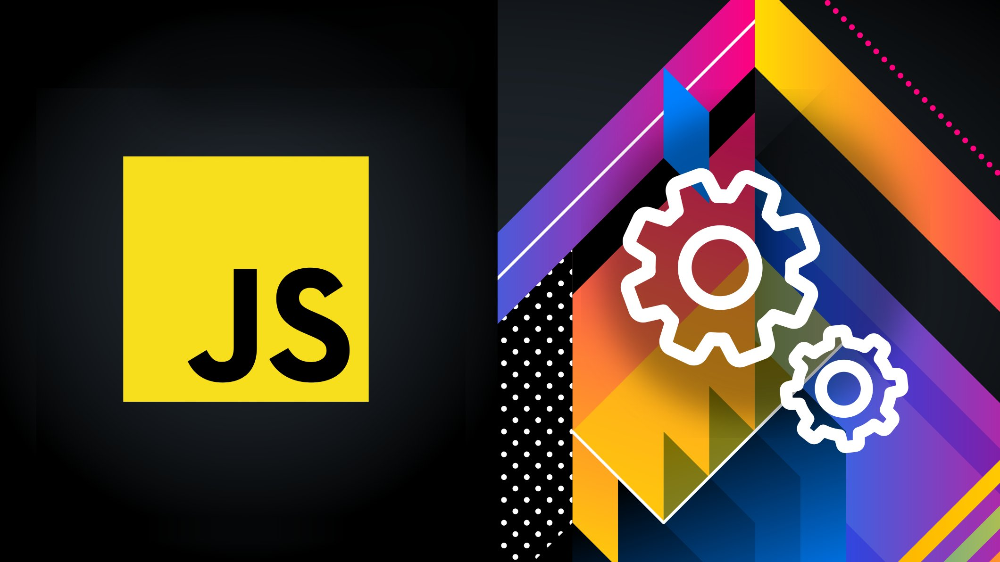
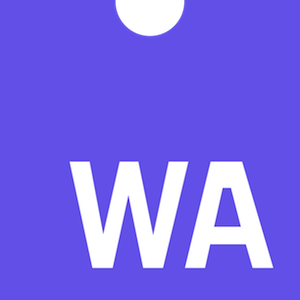
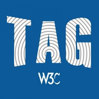
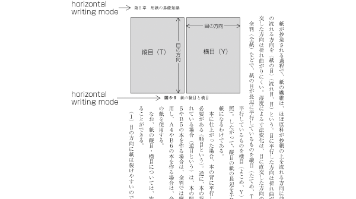

Happy Cyber Monday! Don’t miss out — save 20% on your purchase of programs and verified certificates! Applies to @thew3c #FrontEnd Web #Developer #CSS #HTML5 #JavaScript @edXOnline https://twitter.com/edXOnline/status/1200414839950196737
https://twitter.com/w3cdevs/status/1201396772091891713December@w3c: meeting, W3Cx course... https://www.w3.org/participate/eventscal.html
3-5 Dec.: The @tag meets in #Cupertino 🇺🇸 to discuss about current core design components of the #Web https://github.com/w3ctag/meetings/tree/gh-pages/2019/12-cupertino
https://twitter.com/w3cdevs/status/120146568337416192010 Dec.: New session of @w3cx #JavaScript Introduction course @edXOnline @micbuffa Enroll soon! https://www.edx.org/course/javascript-introduction
https://twitter.com/w3cdevs/status/1201465704509321217For instance, it describes new work on #WebCodecs to expose media encoders/decoders to #WebApps https://www.w3.org/2019/11/web-roadmaps/mobile/media.html#web-codecs
🗣️New edition of the #roadmap of #WebApps on mobile is now published! It adds new work started in @w3c over the past 6 months https://www.w3.org/2019/11/web-roadmaps/mobile/ #November2019 - Thanks to @tidoust @XueFuqiao @W3CChina @Beihang1952
https://cards.twitter.com/cards/18ce53z7ril/790wx
https://twitter.com/w3cdevs/status/1201528925081473024Ever struggled with performance because input events have to be processed on the main thread? The "isInputPending" proposal would help #WebApps detect whether there are pending input events that await firing: https://www.w3.org/2019/11/web-roadmaps/mobile/performance.html#is-input-pending
https://twitter.com/w3cdevs/status/1201528927069573121Actually, why not offload input events processing to workers? Excellent idea💡! Check out the "Inputs for workers and worklets" proposal: https://www.w3.org/2019/11/web-roadmaps/mobile/userinput.html#input-for-workers
https://twitter.com/w3cdevs/status/1201528931993698306Find out about more #Web technologies developed in @w3c that increase the capabilities of #Webapps, how they apply more specifically to the mobile context📱and what are their current implementations: https://w3.org/Mobile/roadmap/
https://twitter.com/w3cdevs/status/1201528936351567873The April 2019 version of the #roadmap pointed out that the @csswg had adopted Resize Observer, an #API for observing changes to an element's size. On top of #Chrome, the API has now shipped in #Firefox and #Safari https://www.w3.org/2019/11/web-roadmaps/mobile/adaptation.html#resize-observer
https://twitter.com/w3cdevs/status/1201528934690635781The @tag updated their ethical Web principles document yesterday:
https://twitter.com/w3ctag/status/1202297407003750400
During last #w3cTPAC in September, we interviewed @torgo on the background and direction of these ethical principles for the #Web architecture.
https://twitter.com/w3cdevs/status/1202549747707461634First, hear @torgo on the motivations behind this - the #Web was built and is developed not as a neutral computing platform, but as a platform for social good: https://vimeo.com/377508039
https://twitter.com/w3cdevs/status/1202549752325427200If you want to contribute to that effort, give input and feedback, go to their github repository!
https://github.com/w3ctag/ethical-web-principles
https://twitter.com/w3cdevs/status/1202549755710201867Starting from that perspective, @torgo explains how the @tag came to consensus on a set of basic ethical principles embodied (or that needs embodiment) in the architecture of the #WebPlatform:
https://vimeo.com/366243173
https://twitter.com/w3cdevs/status/1202549753936056320The first wave of #WebAssembly specs have now finished their path on the @w3c recommendation track - congrats to Andreas Rossberg and @littledan who edited these 3 specs up to their #WebStandard status! #wasm #timetoadopt https://twitter.com/w3c/status/1202583210250690560
This comes less than 2 years after the first public working drafts were released - thanks to the great incubation work done in the @w3c Web Assembly #CommunityGroup
https://www.w3.org/community/webassembly/
https://twitter.com/w3cdevs/status/964131886716112898
https://twitter.com/w3cdevs/status/1202590998137917440This is hardly the end of the work on #WebAssembly, which is set to continue to transform how client-side AND server-side code gets developed and deployed. Hear from @luke_wagner last year on the roadmap ahead:
https://twitter.com/w3cdevs/status/1085183150798516226
https://twitter.com/w3cdevs/status/1202591006115409922Still from @luke_wagner on the plan for greater integration of #WebAssembly with other Web #APIs: https://twitter.com/w3cdevs/status/1156923662479646728
https://twitter.com/w3cdevs/status/1202591008665550848And a new release from our #w3cdevs2019 meetup recordings, hear and watch @linclark explains with her @codecartoons how #WebAssembly is set to redefine cross-language interoperability well beyond browsers:
https://www.w3.org/2019/09/Meetup/speaker-lin.html
https://twitter.com/w3cdevs/status/1202591013753294849The @w3cpublishing invites feedback on 2 documents in @w3c #CandidateRecommendation status: "Publication Manifest and #audiobooks" #timetoimplement https://twitter.com/reidmore_online/status/1202590349438287873
The group's main focus now is to bring #accessibility to #publishing, specifically for #audiobooks to make them usable by users regardless of their ability. This specification is a profile of the Publication Manifest. Find out more in the #github repo: https://github.com/w3c/audiobooks/
https://twitter.com/w3cdevs/status/1202929479137542144At last #w3cTPAC, we interviewed @wendy_a_reid on the @w3cpublishing current and future work: https://vimeo.com/366243892
https://twitter.com/w3cdevs/status/1202929487962398722🗳️ Election time for the @w3c Technical Architecture Group @w3ctag ! Three seats are up for election and four people have been nominated as candidates: @cssrossen from @microsoft, @davidbaron from @mozilla, @kennethrohde from @intel and @lukOlejnik as W3C #InvitedExpert
Each of the four candidates have posted statements about their candidature: https://www.w3.org/2019/12/03-tag-nominations
https://twitter.com/w3cdevs/status/1204018699902038018Rossen Atanassov @cssrossen is determined to guide #API #developers to deliver better #a11y, #interoperability and #i18n, to help make the #Web easier to collaborate, print and publish and to influence the direction of the Web for improved privacy
https://www.w3.org/2019/12/03-tag-nominations#ra
https://twitter.com/w3cdevs/status/1204018710232682497Kenneth Rhode Christiansen @kennethrohde, another current @tag member, intends to continue the work on integrating #PWAs and project Fugu and to pursue the collobaration between the @tag and @tc39 to help review new #JavaScript features
https://www.w3.org/2019/12/03-tag-nominations#kc
https://twitter.com/w3cdevs/status/1204018714775080961David Baron @davidbaron, a long time contributor to the @csswg and current @tag member, is keen on moving the Web where it makes it better for both end users and developers by balancing the user agent need and lower level features developments.
https://www.w3.org/2019/12/03-tag-nominations#db
https://twitter.com/w3cdevs/status/1204018711889424385The @w3c membership elects the @w3ctag members, and the election is open until 10 January 2020. Results will be announced on 14 #Jan2020. Stay tuned!
https://twitter.com/w3cdevs/status/1204018718675746818Lukasz Olejnik @lukOlejnik, also a current @tag member, has interests in #security and #privacy, regulations and #data protection. He highlights the importance of a @tag being a vigilant independent arbiter on future digital ethics challenges.
https://www.w3.org/2019/12/03-tag-nominations#lo
https://twitter.com/w3cdevs/status/1204018716985495552Congrats to @fantasai and @kojiishi for this new #W3CStandard that sets the ground of international writing modes: #timetoadopt https://twitter.com/w3c/status/1204388999953092608
CSS Writing Modes Level 3 defines #CSS support for various international writing modes, incl. horizontal left-to right text (such as in #English or #Hindi), horizontal right to-left text (such as #Hebrew or #Arabic), and vertically set text (such as for #Japanese or #Mongolian)
https://twitter.com/w3cdevs/status/1204396450819522564These new CSS features allow a mixture of horizontal and vertical text regions on the same page. For example:
https://twitter.com/w3cdevs/status/1204396476975202304To capture an overview of where work is needed, see the language matrix maintained by @ri, @webi18n activity lead:
http://w3c.github.io/typography/gap-analysis/language-matrix.html #i18n
https://twitter.com/w3cdevs/status/1204396491810516992So that the World Wide Web is usable worldwide, @w3c is actively seeking feedback and support from communities around the world to meet local needs for language support.
https://twitter.com/w3cdevs/status/1204396488400482308To find out more about all the work happening in @w3c's #i18n, hear from @ri who spoke at our #w3cdevs2018 #meetup last year in #Lyon:
https://vimeo.com/312910612
https://twitter.com/w3cdevs/status/1204396493903450113Also from @somelaniesaid, please refer to this great resource "An adventurer’s guide to W3C specs", where she explains how @w3c #WorkingGroups build mature standards, taking the ex. of guidelines devlt for implementing and using accessible technologies
https://twitter.com/24accessibility/status/1203868019237310464
https://twitter.com/w3cdevs/status/1204731846795370498#HighContrast experiences work by letting users select theme colors and for a scoped number of #semantic elements. It refers to standards developed this year in the @csswg. Find a demo and other resources at https://github.com/melanierichards/talks/tree/master/2019/tpac-hc
Hear from @somelaniesaid who spoke at our #w3cdevs2019 #meetup in #Fukuoka and learn how
to apply #HighContrast or a custom color scheme to enable users to use Web interfaces in a limited color palette #CSS #accessibility
https://www.w3.org/2019/09/Meetup/speaker-melanie.html
https://twitter.com/w3cdevs/status/1204731845407125504To understand where the Second Screen Working Group is going and its expected work on the Open Screen Protocol, watch Mark Foltz' lightning talk at #w3cTpac in September https://www.w3.org/2019/09/TPAC/ac-2screen https://twitter.com/w3c/status/1205049434612097024
https://twitter.com/w3cdevs/status/1205053738941140996#WCAG21 in Danish 🇩🇰! See translations in other languages: https://www.w3.org/WAI/standards-guidelines/wcag/translations/#wcag-21-completed-and-planned-translations #a11y #accessibility #webdevelopment https://twitter.com/w3c/status/1205013226347466752
https://twitter.com/w3cdevs/status/1205055273855078400The recently published @w3c #CSS Writing Modes Level 3 #WebStandard has been translated into Japanese: https://triple-underscore.github.io/css-writing-modes3-ja.html Thank you @strontium91! #html5j #w3c_keio https://twitter.com/w3cdevs/status/1204396450819522564
最近公開された @w3c #CSS Writing Modes Level 3 #WebStandard は日本語に翻訳されています：https://triple-underscore.github.io/css-writing-modes3-ja.html どうもありがとう @strontium91! ＃html5j #w3c_keio
https://twitter.com/w3cdevs/status/1206478073631322114The #WebNFC specification comes with an explainer (https://github.com/w3c/web-nfc/blob/gh-pages/EXPLAINER.md) and a Chromium implementation (https://bugs.chromium.org/p/chromium/issues/detail?id=520391). @anssik and the @w3c WebNFC #CommunityGroup are now looking for feedback! https://twitter.com/w3c/status/1206901889419362309
https://twitter.com/w3cdevs/status/1206917865460453377#timetoimplement https://twitter.com/w3c/status/1207304261681455109
https://twitter.com/w3cdevs/status/1207307370042396672Under this newly released charter, the @w3payments group, led by @mountainhippo and @ahopebailie, continues defining standards that allow for a #payment to be initiated within a #Website or #application
https://www.w3.org/Payments/WG/charter-201912.html https://twitter.com/w3c/status/1207511688800604160
The #WorkingGroup will continue to work on: Payment Request #API, Payment method identifiers, Payment Handler #API and Payment Method Manifest. Priority is to get the Payment Request API adoption by coordinating with browser vendors, payment handler #developers and merchants.
https://twitter.com/w3cdevs/status/1207659458073178112Read also @ibjacobs' post for details about the evolution of the Payment Request #API: https://www.w3.org/blog/wpwg/2019/10/28/the-evolution-of-payment-request-api/ #payments
https://twitter.com/w3cdevs/status/1207659467430608900For more info, hear from @mountainhippo who presented an update of the @w3payment work in #September19 at #w3cTPAC
https://www.w3.org/2019/09/TPAC/ac-payment.html (video with transcript)
https://twitter.com/w3cdevs/status/1207659465773846528The flexibility provided by Payment Handlers are a key element to that adoption. See the related repo https://github.com/w3c/payment-handler/, and demo https://developers.google.com/web/updates/2018/06/payment-handler-api
https://twitter.com/w3cdevs/status/1207659464163254272